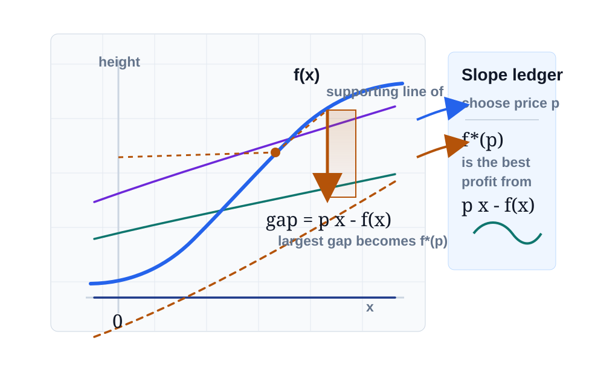
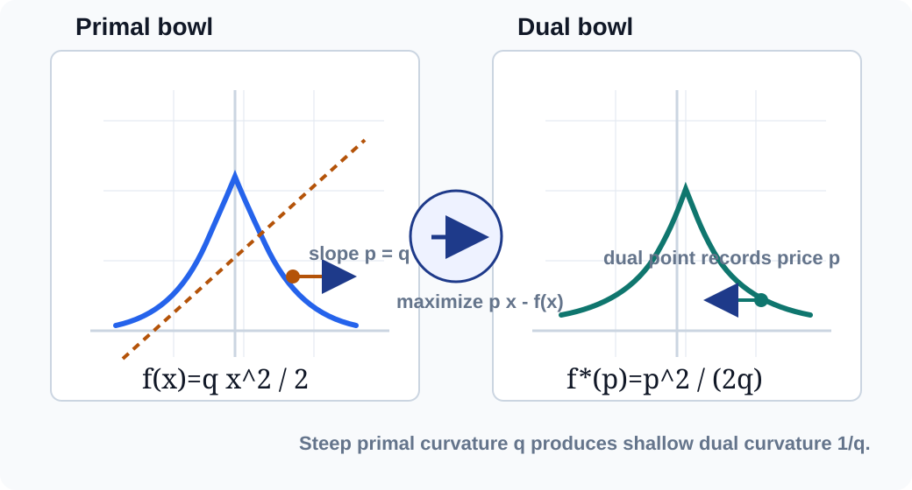
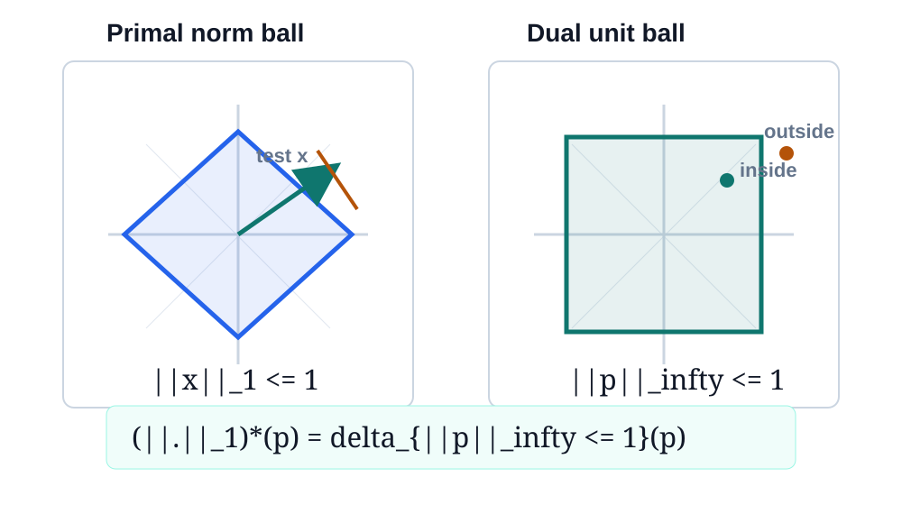
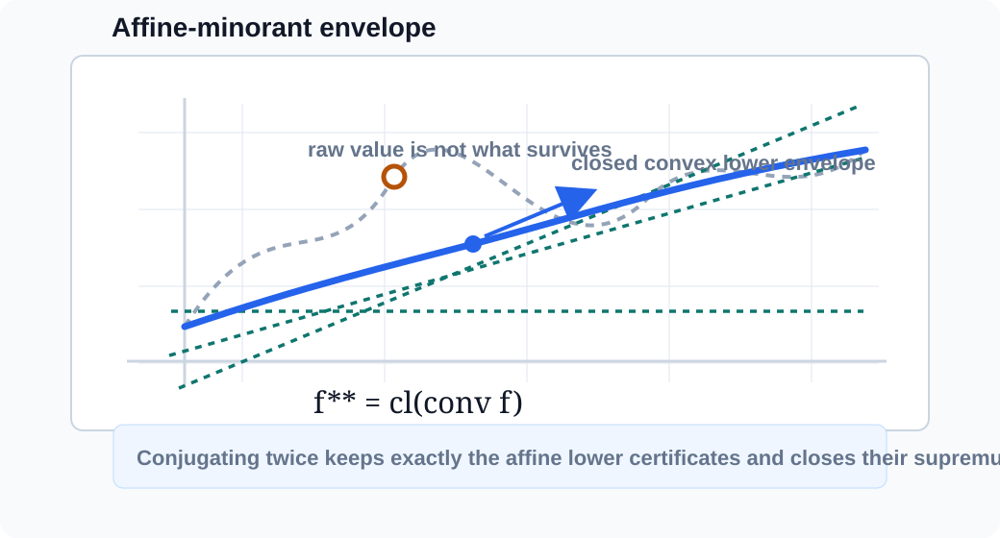

Fenchel conjugacy turns a convex function into a slope-indexed price sheet: each dual slope records the best affine gap it can certify.
For \(f:\mathbb R^n\to[-\infty,+\infty]\), the Fenchel conjugate is
\[ f^*(p)=\sup_x\{\langle p,x\rangle-f(x)\}. \]
Notebook: Convex-Analysis/part-03-duality-correspondences/section-12-conjugates-of-convex-functions/12-conjugates-of-convex-functions.ipynb

Choose a price vector \(p\). Producing \(x\) earns \(\langle p,x\rangle\) and costs \(f(x)\). The conjugate is the best net surplus.
\[p\mapsto f^*(p)=\sup_x(\hbox{revenue}-\hbox{cost}).\]
The optimizing \(x\), when it exists, tells which primal point that price exposes.
\[ f^*(p)=\sup_x \{\langle p,x\rangle-f(x)\}. \]
If the gaps are unbounded above, the conjugate value is \(+\infty\). This is common, not a malfunction.
For every \(p\), the conjugate value builds an affine lower bound
\[ h_p(x)=\langle p,x\rangle-f^*(p)\le f(x). \]
Since \(f^*(p)\) dominates \(\langle p,x\rangle-f(x)\) for every \(x\), rearranging gives the support inequality.
If \(h_p(\bar x)=f(\bar x)\), then \(p\) is a slope supporting \(f\) at \(\bar x\).

\[ f(x)=\frac{q}{2}x^2,\quad q>0. \]
\[ p x-\frac{q}{2}x^2 \quad\hbox{maximized at}\quad x=\frac{p}{q}. \]
\[ f^*(p)=\frac{1}{2q}p^2. \]
Gradient matching is the equality certificate: \(p=\nabla f(x)=qx\).
\[ \delta_C(x)= \begin{cases} 0,&x\in C,\\ +\infty,&x\notin C, \end{cases} \qquad \delta_C^*(p)=\sigma_C(p)=\sup_{x\in C}\langle p,x\rangle. \]
Example asset uses \(C=[-1,2]\). Positive slopes choose \(x=2\); negative slopes choose \(x=-1\).
| \(p\) | argmax | \(\sigma_C(p)\) |
|---|---|---|
| -1.50 | -1.00 | 1.50 |
| -0.50 | -1.00 | 0.50 |
| 0.75 | 2.00 | 1.50 |
| 1.25 | 2.00 | 2.50 |

\[ (\|\cdot\|)^*(p)= \begin{cases} 0,&\|p\|_*\le 1,\\ +\infty,&\|p\|_*>1. \end{cases} \]
The dual unit ball is the set of slopes that never overpay the norm: \(\langle p,x\rangle\le \|x\|\) for all \(x\).
Outside the dual ball, scale the offending \(x\). The affine gap grows without bound.

\[ f^{**}(x)=\sup_p\{\langle p,x\rangle-f^*(p)\}. \]
Every \(p\) contributes one affine lower certificate. Their supremum is automatically convex and closed.
Features invisible to lower affine support are not recovered: upward spikes, open boundary values, and nonconvex dents are replaced by the envelope.
If \(f\) is closed, proper, and convex, then \(f^{**}=f\).
For a general \(f\), \(f^{**}\) is the closed convex function generated by all affine minorants of \(f\).
Boundary limiting values are included, so no missing endpoint can evade the affine-envelope reconstruction.
The function already equals the supremum of its supporting affine functions.
\[ \langle p,x\rangle \le f(x)+f^*(p) \]
Because \(f^*(p)=\sup_z\{\langle p,z\rangle-f(z)\}\), the candidate \(z=x\) gives \(f^*(p)\ge \langle p,x\rangle-f(x)\).
\[ G_f(x,p)=f(x)+f^*(p)-\langle p,x\rangle \ge 0. \]
\[ f(x)+f^*(p)=\langle p,x\rangle \quad\Longleftrightarrow\quad p\in \partial f(x). \]
The subgradient inequality \(f(z)\ge f(x)+\langle p,z-x\rangle\) is the same affine support line written at the contact point.
For a differentiable \(f\), this collapses to \(p=\nabla f(x)\).
for each p: values = p * x_grid - f(x_grid) f_star_hat[p] = max(values) witness[p] = argmax(values)
| \(x\) | \(p\) | \(G_f(x,p)\) | equality |
|---|---|---|---|
| -1.50 | -1.50 | 0.00000 | true |
| -1.00 | 0.25 | 0.78125 | false |
| 0.00 | 0.00 | 0.00000 | true |
| 0.75 | 1.40 | 0.21125 | false |
| 1.80 | 1.80 | 0.00000 | true |
Data mirrored in assets/fenchel-gap-checks.json for auditability.
A slope outside the natural dual domain may make \(\langle p,x\rangle-f(x)\) unbounded above.
A finite grid can underestimate \(f^*(p)\) when the best witness sits between samples or near a boundary.
Conjugating twice recovers the closed convex envelope, so open endpoint data can change.
If \(f\le g\), then \(f^*\ge g^*\). Costs ordered one way become price ledgers ordered the other way.
\[ f^*(p)=\sup_x\{\langle p,x\rangle-f(x)\},\qquad f^{**}(x)=\sup_p\{\langle p,x\rangle-f^*(p)\}. \]
Support functions, polars, dual operations, and subdifferentials all reuse the same affine-certificate language.
Required slide-local assets: conjugate-support-lines.svg, quadratic-conjugate.svg, indicator-support-pair.json, dual-norm-visual.svg, biconjugate-closure.svg, fenchel-gap-checks.json.